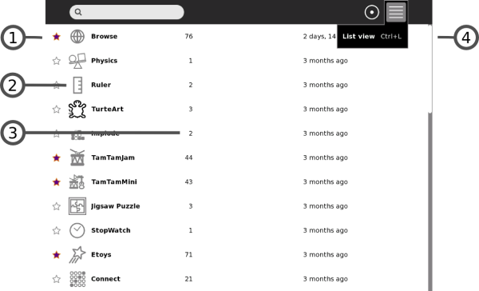
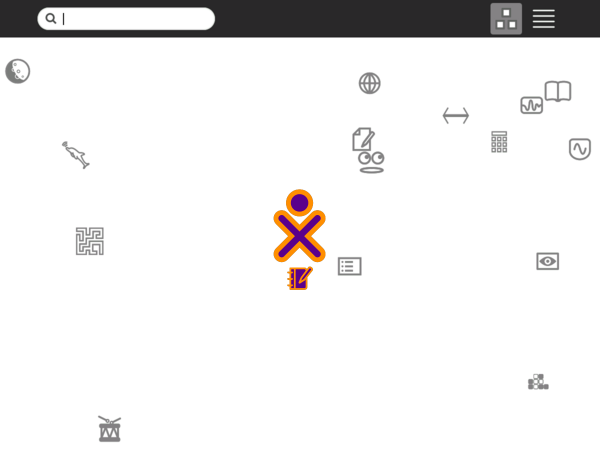
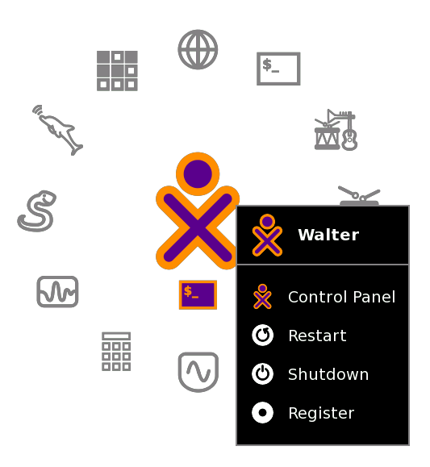

Home View
Use the Home View to begin new Activities.
Note: When you have clicked on an Activity's icon, please wait for that Activity to start. If you get impatient and happen to click again on the Activity's icon, you may end up with that Activity being started twice.
When you click on an Activity's icon, you will see a start-up view while that Activity initializes. Once the Activity is running, you will be placed into its Activity View. If the Activity fails to start, you will instead be returned to Home View.
To get to the Home View, click the Home icon on the Frame or press the F3 key.
The Home View has several modes. Each mode has a different arrangement of Activities:
- Your favorite Activities in a ring (Ring mode)
- Your installed Activities in a list (List view)
- Your favorite Activities arranged freeform (Freeform mode)
Favorites View

- 1. Search box
- Use the search box to find activities. Note: If in List view you see fewer Activities than expected, you may need to click on the small X at the right end of the search box to undo an unintended search request.
- 2. View modes
- Click an icon to switch to a different view. Hover over the Favorites icon to see a menu that lets you pick Ring mode or Freeform mode.
- 3. Activity icon
- Click an Activity icon to launch that Activity (which causes it to appear on the Frame). Only Activities that have been “starred” as favorites appear in this view. (Please see the List View below for more details.)
- 4. XO icon
- Hover the pointer over the "XO" in the center of the Home View to bring up a menu and to access the Sugar Control Panel (Please see the chapter on Customizing Sugar).
- 5. Active-Activity icon
- The icon of the currently active Activity appears under the XO icon.
List View
Use the List view to manage all of your Activities and to choose which Activity icons will appear on the Favorites view.

- 1. Activity entry
- Each entry in the list has:
- a star, which is colored for favorite Activities, which appear in Ring mode or Freeform mode. Click a star to color or clear it.
- an icon
- a title
- a version number
- how long ago it was installed
- 2. Icon
- Click the icon to launch the Activity. Caution: By clicking on Erase in the icon's hover menu, you can uninstall that Activity from your system.
- 3. Version number
- Lets you compare your version against an availability list such as wiki.laptop.org/go/Activities to see if it is up to date.
- 4. Scroll bar
- The Activity list may extend beyond the screen. Use the scroll bar to move through the list.
Favorites View in Freeform Mode
The Freeform mode of the Home View works the same as the Ring mode, but the icons are arranged arbitrarily instead of in a circle. You can drag the icons in this View to visually group them in a way that makes sense to you.

XO Menu
Use the hover menu that appears over the XO icon to access the Sugar Control Panel and to shutdown or restart the computer.

Author : HomeView
© Walter Bender 2008
Modifications:
adam hyde 2008
David Farning 2008
Janet Swisher 2008
Janis Grinbergs 2008
Tom Boyle 2008
License : General Public License